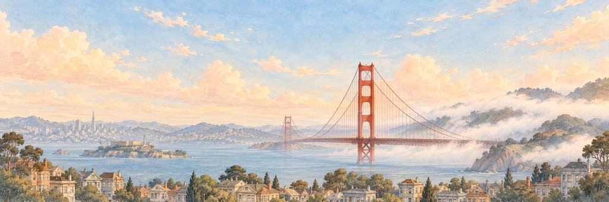
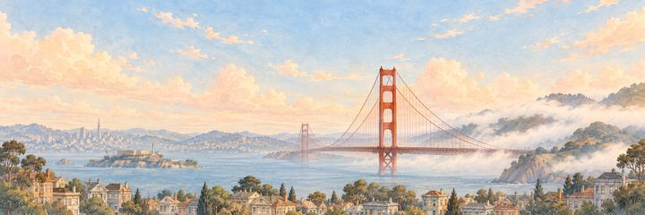
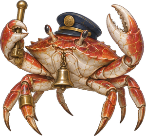
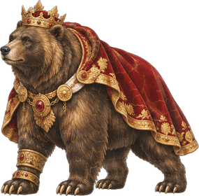

San Francisco game pesawat kertas
Melihat Jembatan Golden Gate menyembul dari kabut.
Jalanan menanjak lurus ke atas. Lewati Gripman, lalu Monarch.
Emas dan kabut
Pada 1848 San Francisco hanyalah kota kecil berpenduduk sekitar 1.000 orang. Lalu emas ditemukan di kaki bukit, dan pada akhir 1849 sekitar 25.000 orang tinggal di sana. Gempa dan kebakaran 1906 membuat sebagian besar kota hancur, dan kota ini sebagian besar dibangun kembali pada 1915.
“Aku akan mendulang emas di kaki bukit, sekali saja.”
Landmark-nyaJembatan oranye
Saat Jembatan Golden Gate dibuka pada 1937, bentang utamanya sepanjang 1.280 meter adalah yang terpanjang di dunia, rekor yang bertahan sampai 1964. Warna oranyenya dipilih agar serasi dengan bukit hijau dan terlihat jelas oleh kapal di tengah kabut.
Kawasan
San Francisco punya lebih dari 50 bukit di dalam batas kotanya, dan beberapa kawasan, seperti Nob Hill dan Russian Hill, dinamai dari bukit-bukit itu. Di Mission District, gereja Mission Dolores, yang selesai pada 1791, adalah bangunan tertua di kota ini. Di seberang Alamo Square, sederet rumah Victoria bercat cerah di Steiner Street, yang dibangun dari 1892 sampai 1896, dikenal sebagai Painted Ladies. Kereta kabel kota ini masih mendaki bukit-bukitnya. Jalur pertamanya dibuka di Clay Street pada 1873, dan sistem ini adalah sistem kereta kabel terakhir di dunia yang dioperasikan secara manual.
Teluk
San Francisco terletak di ujung utara sebuah semenanjung, dengan Samudra Pasifik di barat dan Teluk San Francisco di timur. Jembatan Teluk San Francisco-Oakland dibuka pada 12 November 1936, enam bulan sebelum Jembatan Golden Gate. Di tepi laut, Ferry Building dibuka pada 1898. Menara jamnya, setinggi sekitar 75 meter, dibuat meniru menara Giralda di Sevilla, Spanyol.
Cakrawala kota
Coit Tower, tiang beton setinggi 64 meter di Telegraph Hill, selesai pada 1933 dengan dana warisan Lillie Hitchcock Coit untuk memperindah kota. Transamerica Pyramid dibuka pada 1972 dan menjadi gedung tertinggi di kota ini sampai 2016. Kini Salesforce Tower, yang selesai pada 2018, adalah yang tertinggi dengan tinggi 326 meter.
Waktu terbaik untuk melihatnya
Musim panas sering sejuk dan berkabut, sedangkan September dan Oktober biasanya membawa hari-hari yang paling hangat dan cerah. Tetaplah di sana sampai gelap. Saat itu enam lantai teratas Salesforce Tower menyala dengan karya seni dari 11.000 LED, yang menampilkan adegan-adegan yang direkam di sekitar kota pada hari itu.
Siapa yang menjaga keinginan di San Francisco.
Penjaga Elite bangun lebih dulu; Penjaga Boss menjaga keinginan itu sendiri. Kenai titik lemah mereka untuk BONK!, berikan pukulan terakhir untuk KO!, lalu masing-masing tersenyum dan membungkuk.
-
Elite


Gripman
Membunyikan lonceng di tiap bukit · Penjaga kereta kabel
Seorang gripman mengoperasikan tuas yang mencengkeram kabel bergerak di bawah jalanan San Francisco dan menarik gerbong mendaki bukit. Para awak terkenal membunyikan lonceng berirama, dan kota ini sudah lebih dari lima puluh kali mengadakan lomba membunyikan lonceng untuk mereka sejak 1949.
Si kepiting menyentuh topinya, menggenggam tuas, dan membunyikan lonceng dua kali. Si kepiting terhuyung, lalu mengencangkan genggamannya pada tuas. Si kepiting meletakkan tuas dan membunyikan lonceng sekali.
“Aku mau minta giliran membunyikan loncengnya.”
-
Boss

Monarch
Raja terakhir beruang grizzly · Penjaga Golden State
Monarch adalah grizzly California yang besar, ditangkap pada 1889 untuk aksi koran dan dipelihara bertahun-tahun di Golden Gate Park. Grizzly California diburu sampai habis tak lama kemudian. Banyak yang bilang ia model beruang di bendera negara bagian, tetapi tak ada yang bisa membuktikan.
Monarch mengangkat kepala bermahkotanya. Di suatu tempat yang jauh, kabut menyingkap. Monarch berdiri tegak, menggeram, lalu turun kembali berempat. Monarch menundukkan kepala bermahkotanya dan membungkuk.
“Aku mau bilang padanya bahwa ia masih ada di bendera.”
Menjaga jimat: Paku Keling Golden Gate. Satu serangan tambahan di setiap pertarungan penjaga.
San Francisco tamat. Jembatannya benar-benar oranye, bukan emas.
- Si kepiting membunyikan lonceng padaku. Kurasa itu sapaan.
- Monarch membungkuk, tapi tetap tampak seperti raja.
Pesawat tiba di San Francisco dari Sydney. Tampilan pesawat khasnya adalah jejak Kabut Tipis.